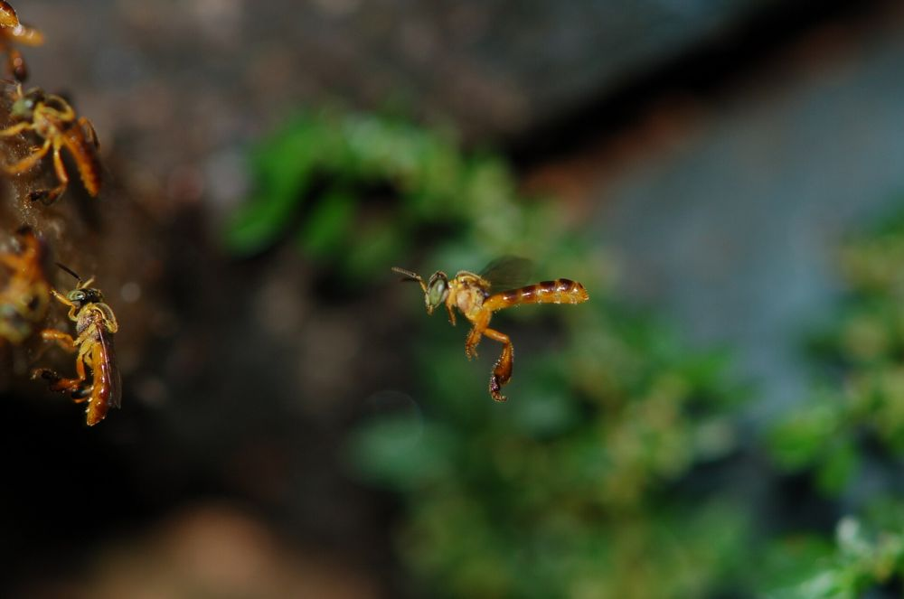

我發現一個蜂巢！
還好你來到這裡。只要幾個簡單的步驟，就能救下這些蜜蜂。
一步一步該怎麼做
- 保持冷靜。
無螫蜂不會螫人，你沒有危險。 - 不要動蜂巢。
不要堵住入口，也不要用水、火或殺蟲劑。 - 拍張照片。
拍下蜂巢入口，可以的話也近拍蜜蜂，有助於辨認種類。 - 記下地點。
地址、蜂巢的位置（牆、樹、電線桿）以及高度。 - 請求救援。
聯絡當地的無螫蜂養蜂人或養蜂協會，傳送照片和地點。

如果蜂巢不礙事，就讓它留在原地
- 牠們不會傷害人，也不會傷害寵物。
- 牠們為附近的植物授粉，包括菜園和果樹。
- 沒有技術就移除蜂巢，通常會讓整個蜂群死亡。